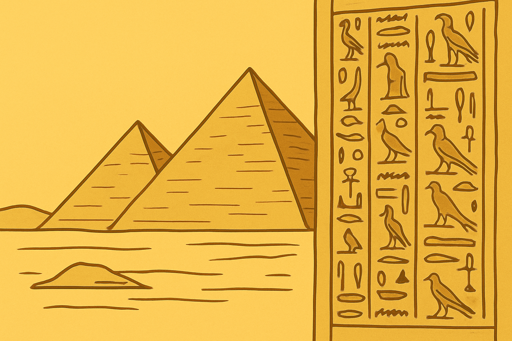
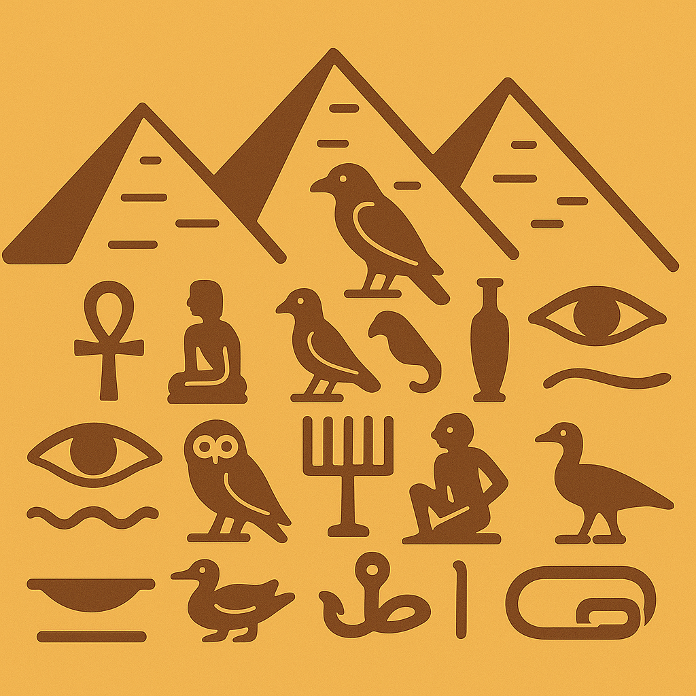
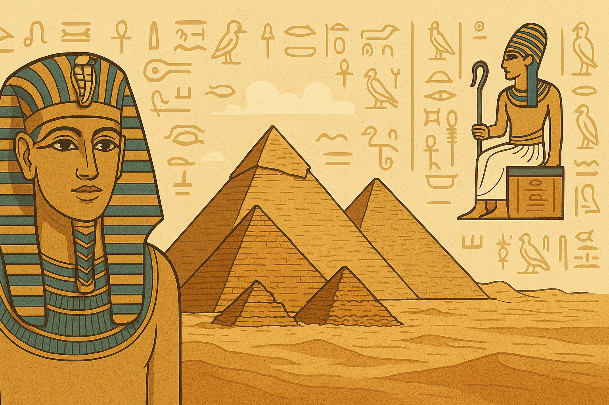

Generalități
Egiptul Antic a fost o veche civilizație din nord-estul Africii, care s-a dezvoltat în zonele joase de-a lungul fluviului Nil, suprafața actuală a statului modern Egipt. Civilizația egipteană s-a format în jurul anilor 3150 î.Hr. (în conformitate cu cronologia egipteană convențională), prin unificarea politică a Egiptului de Sus și a Egiptului de Jos sub conducerea primului faraon. Istoria Egiptului antic se împarte într-o serie de regate stabile Vechiul Regat Egiptean, Regatul Mijlociu Egiptean și Noul Regat Egiptean separate prin perioade de instabilitate relativă cunoscute sub numele de perioade intermediare.
Egiptul a ajuns la apogeul puterii sale în timpul Noului Regat, în epoca faraonilor ce au purtat numele de „Ramses”, care rivaliza cu Imperiul Hitit, Imperiul Asirian și Imperiul Mitanni, după care a intrat într-o perioadă de declin lent. Egiptul a fost invadat și cucerit de o succesiune de puteri străine (canaaniți/hicsoși, libieni, nubieni, asirieni, babilonienii, perși, macedoneni și romani), în a treia perioadă intermediară și Perioada târzie. În urma morții lui Alexandru cel Mare, generalul acestuia Ptolemeu I Soter, s-a proclamat noul conducător al Egiptului. Dinastia Ptolemeică a condus Egiptul până în anul 30 î.Hr., când, sub domnia Cleopatrei, Egiptul a fost cucerit de romani și a devenit o provincie romană.
Succesul civilizației egiptene antice a rezultat datorită capacității de a exploata eficient zonele fertile de-a lungul văii Nilului. Surplusul de recolte provenit din exploatarea inundațiilor naturale previzibile și a sistemului de irigații au facilitat dezvoltarea unui surplus de populație care a contribut la dezvoltarea socială și culturală. De asemenea, resursele alimentare bogate au putut susține exploatarea mineralelor din vale și din regiunile deșertice din jurul văii Nilului, dezvoltarea unui sistem de scriere timpuriu, dezvoltarea construcțiilor și proiectelor agricole, dezvoltarea comerțului și dezvoltarea forțelor militare necesare pentru apărare și pentru campaniile militare care au dus la afirmarea dominației civilizației egiptene în regiune. Organizarea și conducerea acestor activități a fost posibilă printr-o birocrație de elită formată din scribi, preoți și administratori sub controlul unui faraon cu puteri divine care asigura cooperarea și unitatea poporului egiptean.
Multele realizări ale vechilor egipteni includ tehnicile de extracție a mineralelor, măsurătorile topografice, tehnicile de construcție care au facilitat construirea unor monumente grandioase precum piramidele, templele și obeliscurile; un sistem matematic și un sistem practic și efectiv de medicină, sistemele de irigații și tehnicile de producție agricolă, producția navală, tehnicile de producție a faianței și a sticlei, noi forme de literatură și primul tratat de pace cunoscut, întocmit cu Imperiul Hitit. Egiptul a lăsat o moștenire durabilă. Arta și arhitectura i-au fost preluate pe scară largă, iar antichitățile din vechiul Egipt sunt expuse în toate colțurile lumii. Ruinele sale monumentale au inspirat și îmbogățit imaginația multor scriitori și turiști timp de multe veacuri. Pasiunea pentru antichități și săpăturile arheologice din perioada modernă timpurie a dus la investigarea științifică a civilizației egiptene, punându-se bazele unei noi științe: Egiptologia.